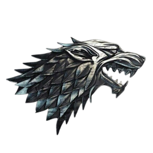

Stark
Lema: "O Inverno Está Chegando"
Localização: Winterfell, no Norte
Sobre: A Casa Stark é conhecida por sua honra e lealdade.
Guardiões do Norte, os Stark valorizam a justiça e a tradição. Sua linhagem remonta aos
Primeiros Homens, e eles têm uma conexão profunda com os lobos gigantes e as florestas
sombrias de sua terra.
Personagens Principais: Ned Stark, Catelyn Stark, Robb,
Sansa, Arya, Bran, Jon Snow.
Lannister
Lema: "Ouça-me Rugir!" (Lema oficial)
"Um Lannister
Sempre Paga Suas Dívidas" (Dito popular)
Localização: Rochedo Casterly, no Oeste
Sobre: Ricos, poderosos e calculistas, os Lannisters são
mestres da política e do jogo dos tronos.
Com ouro suficiente para financiar guerras e alianças, eles são uma das famílias mais
influentes dos Sete Reinos.
Personagens Principais: Tywin, Cersei, Jaime, Tyrion.
Targaryen
Lema: "Fogo e Sangue"
Localização: Originalmente em Pedra do Dragão; governaram
dos Sete Reinos a partir de Porto Real
Sobre: Antiga casa governante de Westeros, os Targaryen são
descendentes dos Valirianos e conhecidos
por sua ligação com dragões. Seu lema simboliza o poder destrutivo e incontrolável de sua
dinastia.
Personagens Principais: Daenerys, Viserys, Aegon, Rhaegar.
Baratheon
Lema: "Nossa é a Fúria"
Localização: Ponta Tempestade
Sobre: Fundada por guerreiros, a Casa Baratheon é conhecida
por sua força bruta e temperamento explosivo.
Foi a casa de Robert Baratheon, que derrubou a dinastia Targaryen e se tornou rei dos Sete
Reinos.
Personagens Principais: Robert, Stannis, Renly.
Greyjoy
Lema: "Nós Não Semeamos"
Localização: Ilhas de Ferro
Sobre: Os Greyjoy são os orgulhosos e ferozes senhores das
Ilhas de Ferro.
Sua cultura é baseada na pirataria e no saque, e eles seguem o "Caminho do Ferro",
rejeitando riquezas adquiridas sem luta.
Personagens Principais: Balon, Theon, Yara (Asha nos
livros), Euron.
Tyrell
Lema: "Crescendo Fortes"
Localização: Jardim de Cima, no Sul
Sobre: Os Tyrell são uma casa rica e influente, conhecidos
por sua habilidade política e diplomacia.
Seus vastos recursos agrícolas tornam a Campina o coração da economia de Westeros.
Personagens Principais: Margaery, Olenna, Loras.
Martell
Lema: "Nunca Curvados, Nunca Quebrados"
Localização: Lançassolar, em Dorne
Sobre: Orgulhosos e independentes, os Martell governam Dorne
com paixão e honra.
Eles são famosos por sua cultura distinta, que valoriza a liberdade e a igualdade.
Personagens Principais: Doran, Oberyn, Ellaria Sand.
Tully
Lema: "Família, Dever, Honra"
Localização: Correrrio
Sobre: Os Tully são conhecidos por sua devoção à família e
sua posição estratégica no Tridente,
onde frequentemente desempenham papéis cruciais nas guerras de Westeros.
Personagens Principais: Catelyn Stark, Lysa Arryn (nascida
Tully), Edmure Tully, Brynden "Peixe Negro" Tully.
Arryn
Lema: "Tão Alto Como a Honra"
Localização: Ninho da Águia, no Vale
Sobre: Governantes do Vale, os Arryn são conhecidos por sua
fortaleza
inacessível e pelo orgulho em sua honra e tradição.
Personagens Principais: Jon Arryn, Lysa Arryn, Robin Arryn.